Treze livros. Um universo.
Encontre as regras, os povos e os segredos que dão vida à sua mesa.
Conhecer o mundo
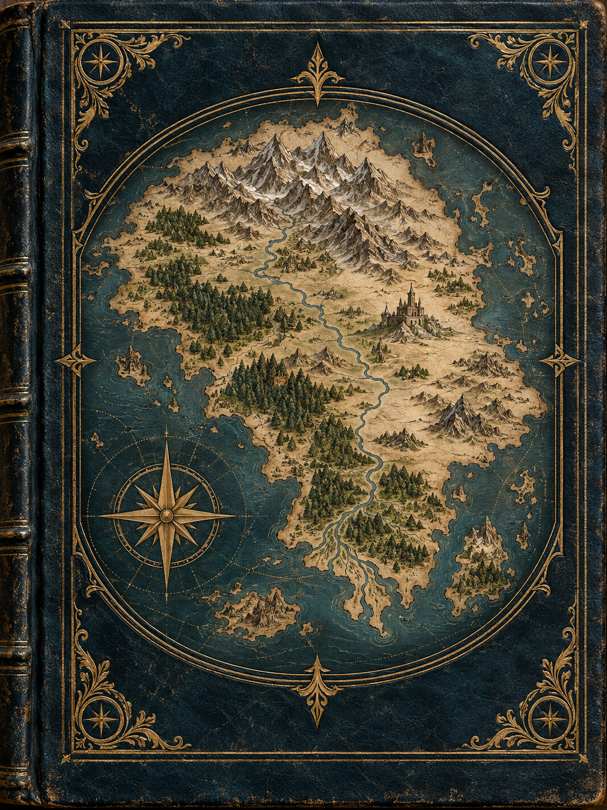
Capa · Geografiaassets/img/home/capa-geografia.pngGeografia
Os três reinos humanos, Encruzilhada e as terras élficas, anãs e demoníacas por completo.
Abrir livro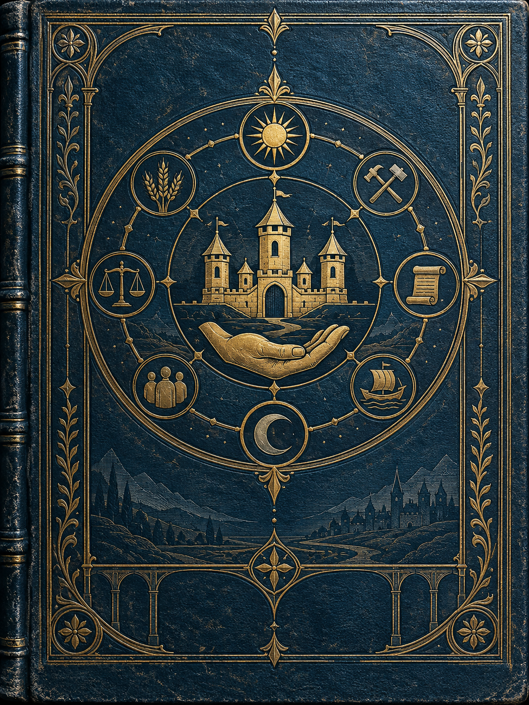
Capa · Sociedadeassets/img/home/capa-sociedade.pngSociedade
Religião, facções, leis, justiça e o calendário de Valédria.
Abrir livro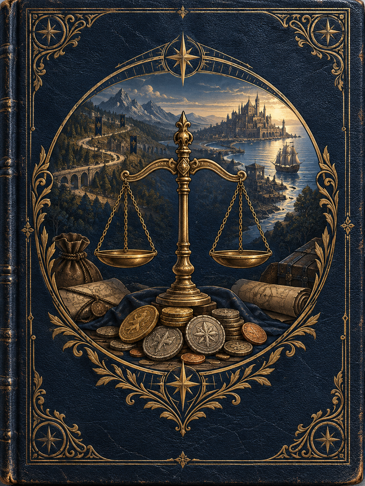
Capa · Economiaassets/img/home/capa-economia.pngEconomia
Moedas, custo de vida, regras de comércio e o catálogo completo de itens básicos.
Abrir livro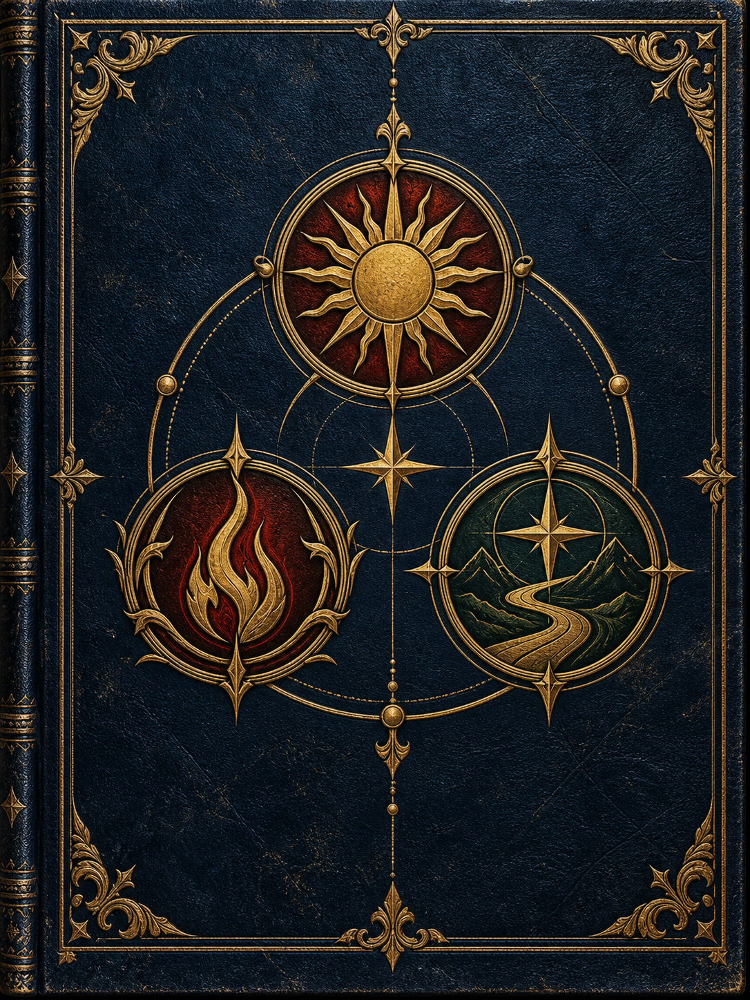
Capa · Facçõesassets/img/home/capa-faccoes.pngFacções
A Guilda de Aventureiros e as facções jogáveis: Ordem do Alvorecer, Círculo da Chama Silenciosa e Liga dos Caminhos.
Abrir livroCriar e jogar
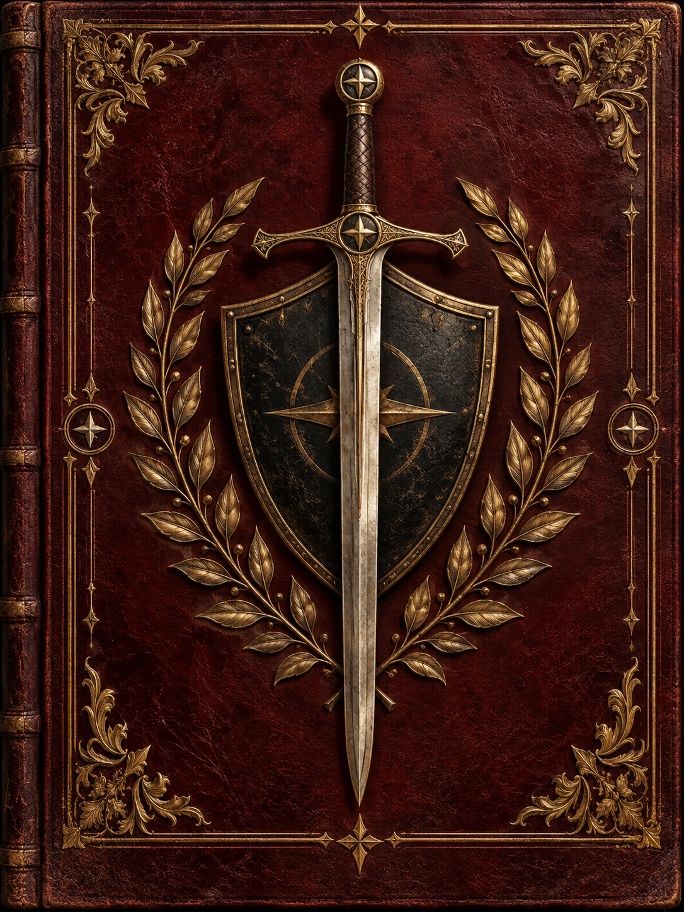
Capa · Sistemaassets/img/home/capa-sistema.pngSociedade
Atributos, testes, combate, perícias, papéis e progressão de personagem.
Abrir livro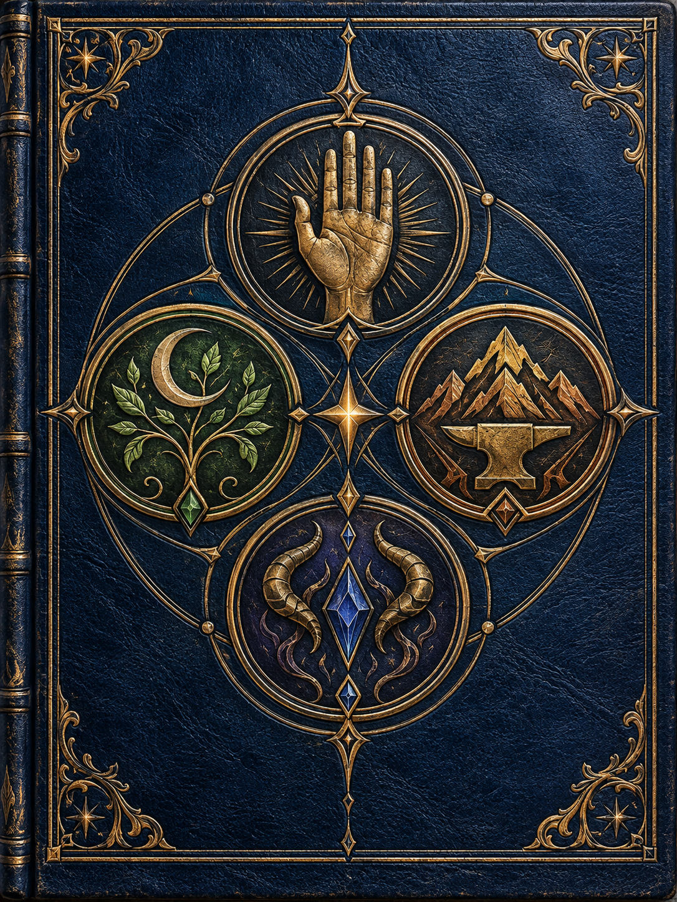
Capa · Raçasassets/img/home/capa-racas.pngRaças
Humanos e suas castas, elfos, anões e as cinco linhagens demoníacas.
Abrir livro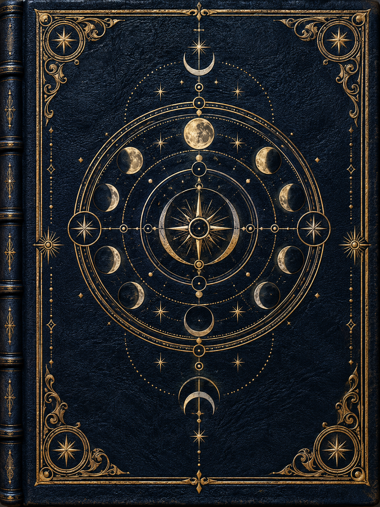
Capa · Magiaassets/img/home/capa-magia.pngRaças
As sete escolas do Grimório, do Aprendiz ao grau Deus.
Abrir livro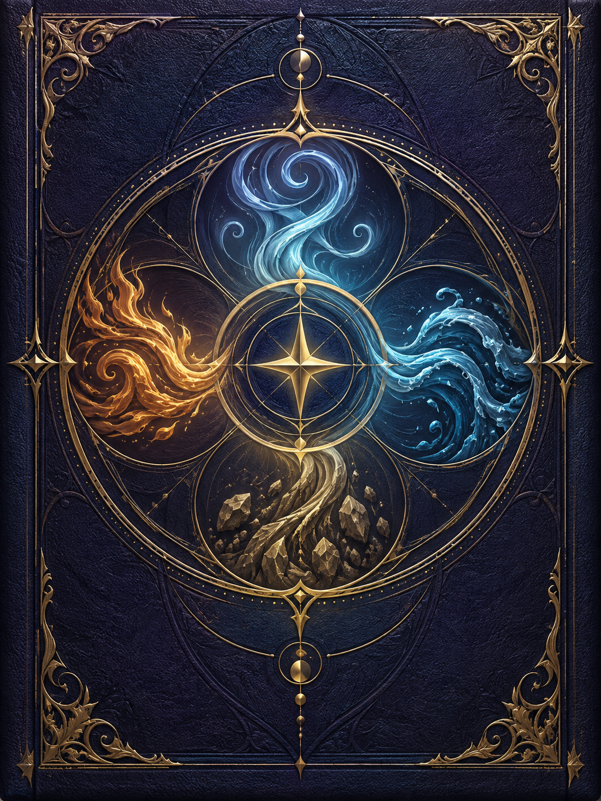
Capa · Auraassets/img/home/capa-aura.pngAura
Os quatro Caminhos marciais e o Fôlego de Aura.
Abrir livro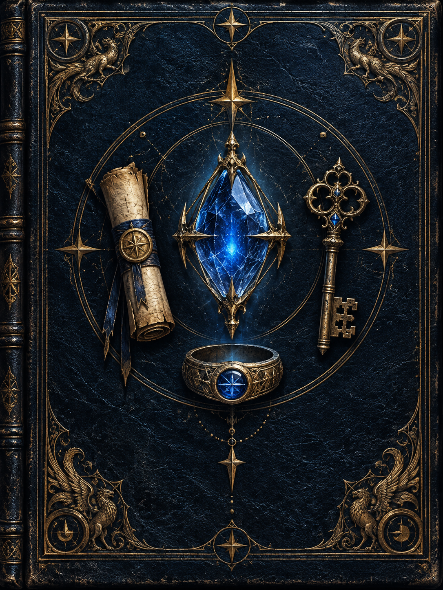
Capa · Artefatosassets/img/home/capa-artefatos.pngArtefatos
Do artefato comum às armas lendárias, cada uma com sua condição e maldição.
Abrir livroPreparar aventuras
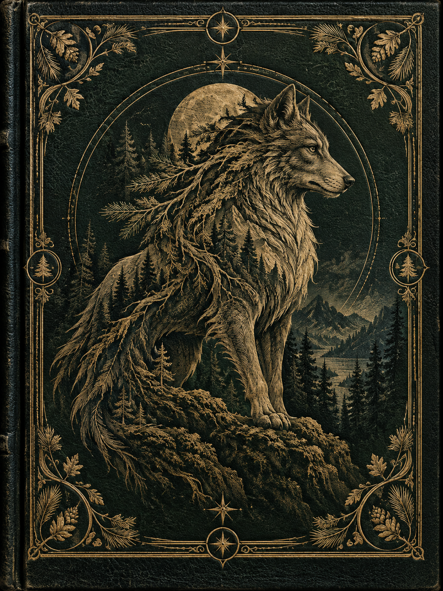
Capa · Bestiárioassets/img/home/capa-bestiario.pngAura
Trinta e três feras e monstros de todos os territórios, do Lobo das Estradas às criaturas Lendárias.
Abrir livro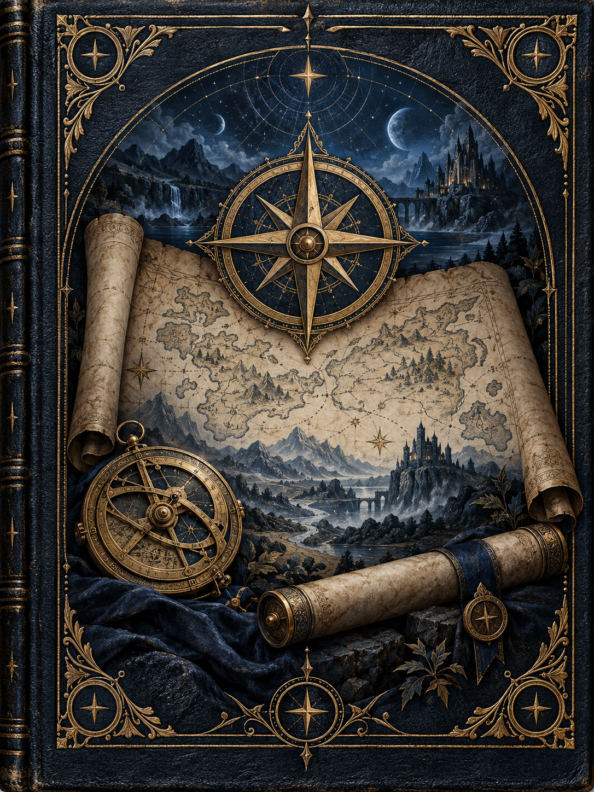
Capa · Clima, Viagem e Encontrosassets/img/home/capa-exploracao.pngClima, Viagem e Encontros
Tempos de viagem, efeitos climáticos e tabelas de encontro aleatório.
Abrir livro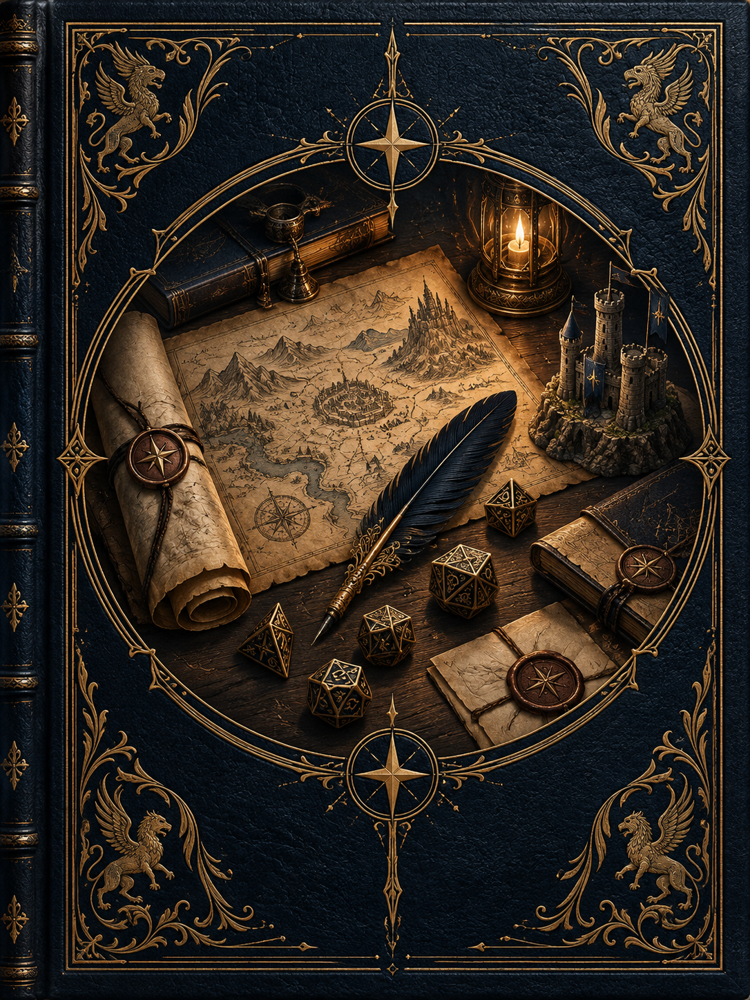
Capa · Livro do Mestreassets/img/home/capa-mestre.pngLivro do Mestre
Campanhas, encontros e ferramentas para narrar Valédria.
Abrir livro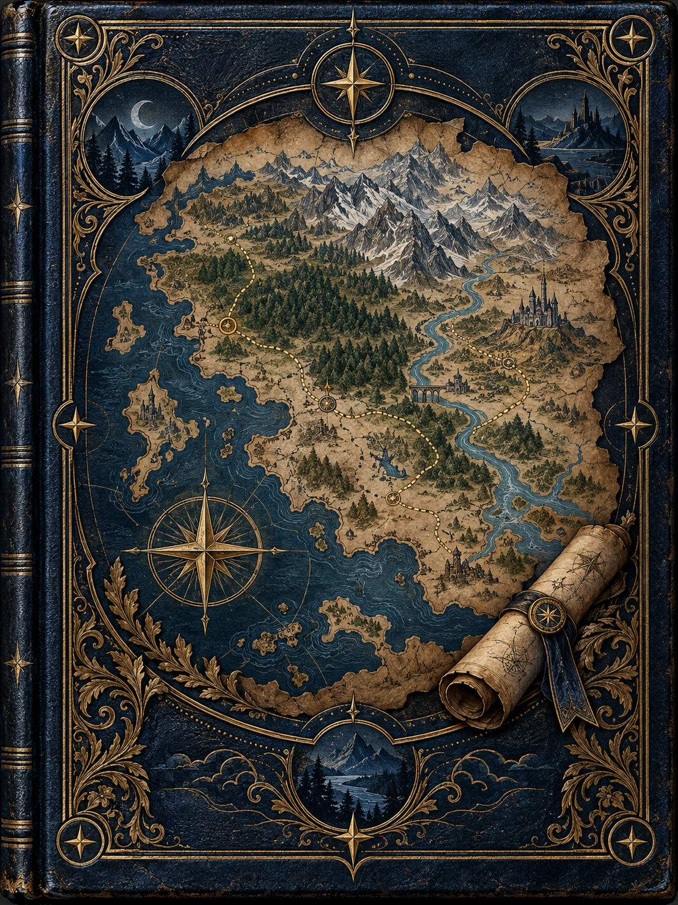
Capa · Mapa e Aventurasassets/img/home/capa-mapa.pngMapa e Aventuras
Mapa clicável de Valédria, dossiês de cidades, gerador de aventuras regionais e relações entre personagens.
Abrir livro